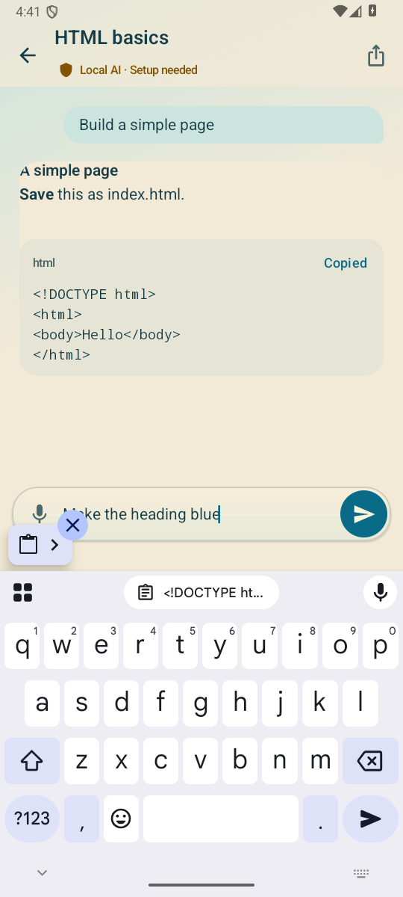
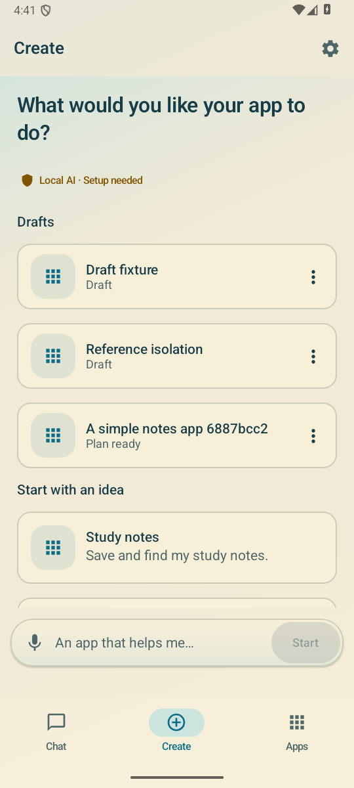
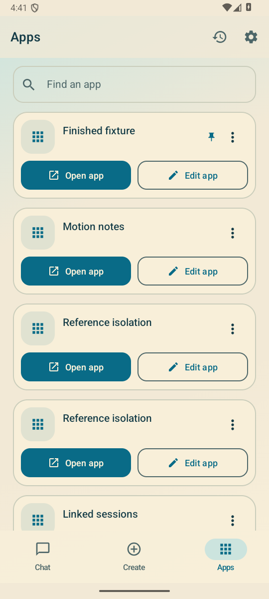
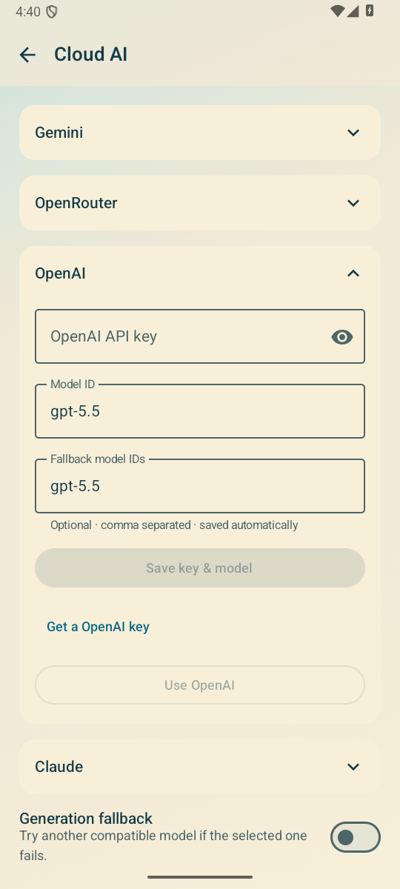
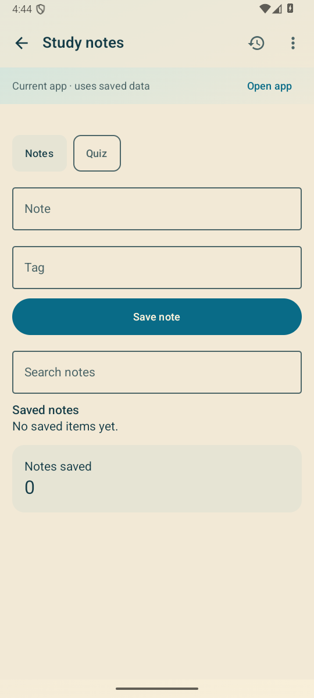
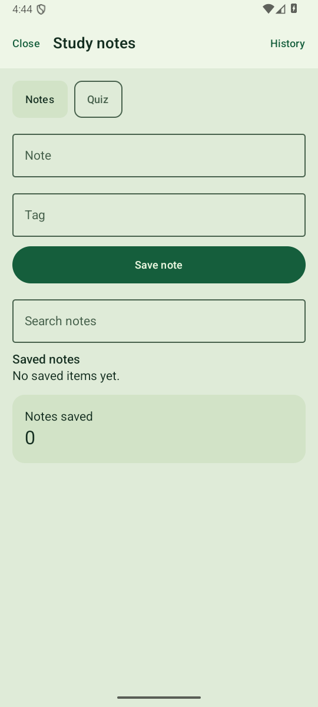
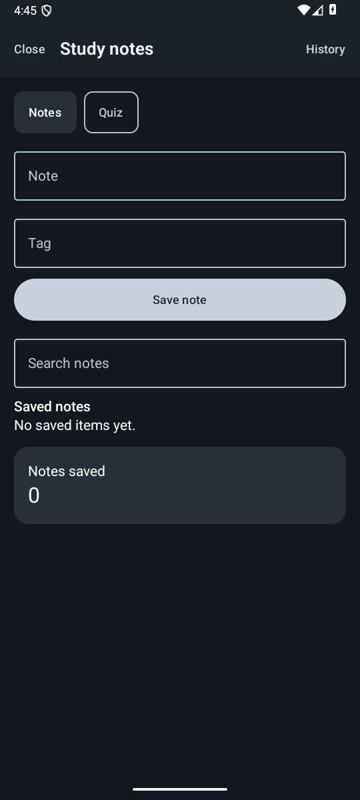
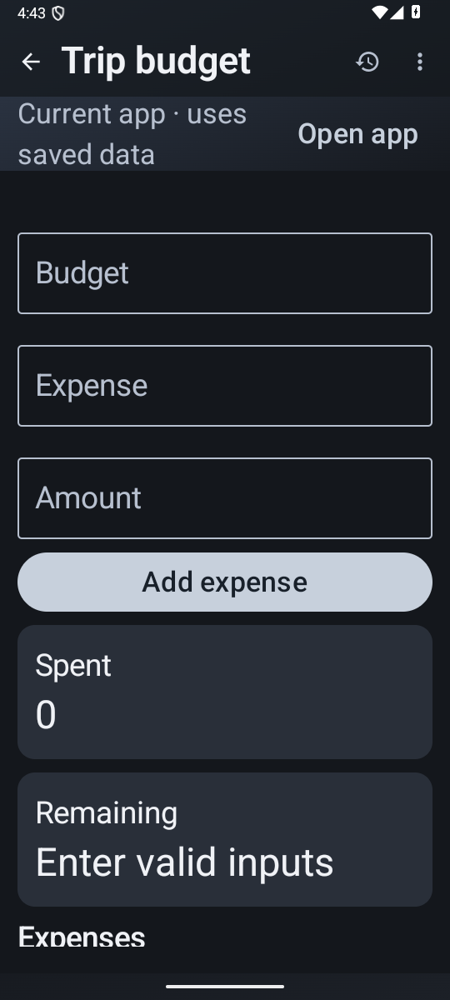
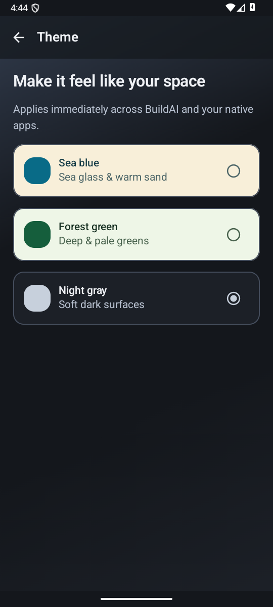

Chat · keyboard visible

Sea blue: a compact input, connection in the header and exact HTML copying. Android’s clipboard overlay is visible after the copy check.
Create · app drafts

Unfinished app conversations are separate from finished apps. Offline tools are hidden by default.
Apps · pinned first

Finished apps and persistent pinning. Existing emulator test examples remain in the list.
Cloud providers

OpenAI expanded, other providers closed; fallback switched off for the toggle test.
Native app preview · Sea blue

The runnable preview uses the real generated app definition.
Standalone app · Forest green

A generated native notes app, opened separately from the builder.
Standalone app · Night gray

The same generated app using the night palette.
Preview · 2× text size

Large text retains scrolling and access to the app controls.
Theme selection · Night gray

All three themes are available, with the current choice indicated.